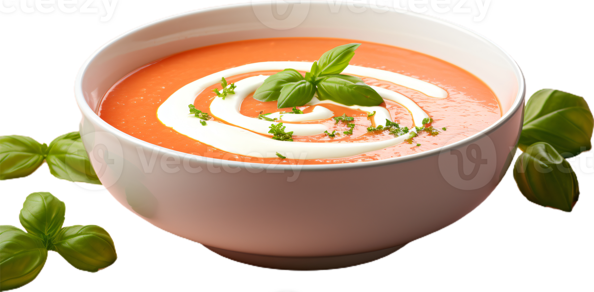

Receta de Sopa de Tomate
una sopa llena de textura y sabor.
Ingredientes:
- Tomates maduros
- Cebolla
- Caldo: Puede ser caldo de verduras o de pollo, según tu preferencia.
- Ajo
- Aceite de oliva
- Sal y pimienta al gusto
Ingredientes opcionales:
- Pimiento rojo: Aporta dulzor y un toque de color.
- Zanahoria: Añade dulzor y textura.
- Hierbas aromáticas: Como albahaca, orégano o laurel, para realzar el sabor.
- Azúcar: Una pizca puede ayudar a equilibrar la acidez de los tomates.
- Crema o leche: Para una textura más cremosa.
- Pan: Para hacer crutones y acompañar la sopa.
Preparación:
- Preparar las verduras:Lava y corta los tomates en trozos grandes, Pela y pica la cebolla y el ajo finamente, Si usas pimiento rojo y zanahoria, lávalos, pélalos (si es necesario) y córtalos en trozos.
- Sofreír las verduras: En una olla grande, calienta el aceite de oliva a fuego medio, Agrega la cebolla y el ajo, y sofríe hasta que estén dorados1 y fragantes. Si usas pimiento rojo y zanahoria, agrégalos a la olla y sofríe durante unos minutos más.
- Agregar los tomates y el caldo: Agrega los tomates a la olla y mezcla bien. Vierte el caldo de verduras o de pollo sobre los tomates. La cantidad de caldo dependerá de la consistencia que desees para la sopa.Si usas hierbas aromáticas, como albahaca o laurel, agrégalas a la olla.
- Cocinar a fuego lento: Lleva la sopa a ebullición, luego reduce el fuego y cocina a fuego lento durante 20-30 minutos, o hasta que los tomates estén muy blandos.
- Triturar la sopa: Retira las hierbas aromáticas si las usaste. Con una licuadora de mano o una licuadora convencional, tritura la sopa hasta obtener una textura suave y cremosa. Si prefieres una sopa más rústica, puedes dejar algunos trozos de tomate.
- Sazonar y ajustar la consistencia: Regresa la sopa a la olla y sazona con sal y pimienta al gusto. Si la sopa está muy espesa, puedes agregar un poco más de caldo o agua para diluirla. Si deseas una textura más cremosa, puedes agregar un chorrito de crema o leche.
- Servir: Sirve la sopa caliente, acompañada de crutones, queso parmesano rallado o una ramita de albahaca fresca.